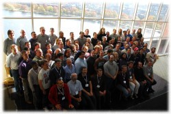

The 2010 Kernel Summit
- Welcoming newcomers: is the kernel
development community sufficiently open to newcomers to ensure an
adequate flow of new developers? If not, what can we do about it?
- ABI status for tracepoints. There is
an increasing amount of instrumentation which depends on tracepoints;
they are becoming part of the kernel binary interface. To what extent
should tracepoints have set-in-cement ABI status?
- The core kernel vision. Neil Brown
asks: do we have a core vision for how the kernel should be developed?
If so, how do we enforce it?
- A staging process for ABIs. Getting
user-space ABIs right is hard; should there be a process for
tentatively adding interfaces which are subject to change?
- Deadline scheduling: does the kernel
need a new class for deadline scheduling?
- Regressions as seen by kernel
regression tracker Rafael Wysocki.
- Performance regressions:
performance-sensitive users often notice that kernel releases tend to
get slower over time. What can we do about that?
- Big out-of-tree projects: are they a
problem, and what can be done about them?
- Checkpoint/restart: what are its
prospects for inclusion?
- Lightning talks: the final session of the day was dedicated to short talks on Coccinelle, the device model, the big kernel lock, and more.
The sessions which were held on the second day of the summit are:
- Linux at NASDAQ; a session on how
a high-volume end users uses Linux and where the pain points are.
- Scalability: where we stand and what
comes next.
- Minisummit reports covering
networking, filesystems, Video4Linux, embedded, power management, and
more.

- Security: are we doing enough to keep
the kernel secure?
- Scheduling issues: this session was
essentially a second end-user presentation focused on Google's
scheduling challenges.
- Kernel.org update: the current status
of the infrastructure behind kernel development.
- A stable tree update from Greg Kroah-Hartman. The bulk of the
information presented here was also seen at Greg's LinuxCon Japan keynote, so readers may
want to go there for the details. Beyond that, Greg noted that he
will start dropping trees a little sooner (2.6.35 is about to get its
last update). There were some questions on the routing of stuff to
stable - both in terms of missing important patches and sending stuff
which shouldn't go there. The solution in both cases is for
maintainers to pay more attention.
- Development process issues: Linus
Torvalds and Andrew Morton talk about how the process is going, what
can be improved, and whether the version numbering scheme should
change.
- Future summits: the format of the kernel summit looks likely to change starting in 2011.
The Kernel Summit was followed by a joint reception with the Linux
Plumbers Conference. An election for the Linux Foundation's Technical
Advisory Board was held there. The five open seats were won by James
Bottomley and Chris Mason (both incumbents), joined by newcomers John
Linville, Grant Likely, and Hugh Blemings.
| Index entries for this article | |
|---|---|
| Kernel | Kernel Summit |
| Conference | Kernel Summit/2010 |
Posted Nov 4, 2010 5:30 UTC (Thu)
by malcolmt (guest, #65441)
[Link] (1 responses)
Posted Nov 4, 2010 15:11 UTC (Thu)
by gwittenburg (guest, #5080)
[Link]
Posted Nov 5, 2010 10:16 UTC (Fri)
by Velmont (guest, #46433)
[Link] (2 responses)
Ohwell, now I've read many of them anyway. It'd be nice to see how many comments each of them has as well though. I like reading articles with comments, I always feel they already are "recommended".
Posted Nov 6, 2010 3:07 UTC (Sat)
by mfedyk (guest, #55303)
[Link] (1 responses)
I want more, more, more!
it seems like a lot when you read it on a phone but even on a 1024 x 768 crt monitor many articles are merely two screens long.
I love lwn and give me more.
Posted Nov 8, 2010 21:24 UTC (Mon)
by cmccabe (guest, #60281)
[Link]
Great job Johnathan and LWN!
The 2010 Kernel Summit
The 2010 Kernel Summit
The 2010 Kernel Summit
The 2010 Kernel Summit
The 2010 Kernel Summit